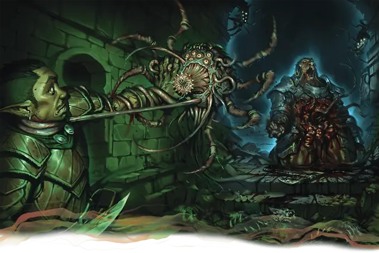

Ловчий падальщик
Carrion Stalker
Крошечная Аберрация, без мировоззрения

Класс Защиты 15 Инициатива +3 (13)
Хиты 55 (10к4 + 30)
Скорость 30 футов, Копания 30 футов
| мод | спас | ||
|---|---|---|---|
| СИЛ | 6 | −2 | −2 |
| ЛОВ | 17 | +3 | +3 |
| ТЕЛ | 16 | +3 | +3 |
| мод | спас | ||
|---|---|---|---|
| ИНТ | 2 | −4 | −4 |
| МДР | 13 | +1 | +1 |
| ХАР | 6 | −2 | −2 |
Чувства пассивное Восприятие 11, Чувство вибрации 60 футов
Языки нет
Опасность 3 (700 опыта; БВ +2)
Действия
Мультиатака. Падальщик совершает две атаки Щупальцем и одну атаку Жалом.
Щупальце. Бросок рукопашной атаки: +5, досягаемость 5 фт. Попадание: 8 (2к4 + 3) Колющего урона, и падальщик прикрепляется к цели. Падальщик не может совершать атаки Щупальцем по другим целям, кроме той, к которой он прикреплён. Цель или другое существо в пределах 5 футов от неё может действием открепить падальщика. Падальщик может открепиться самостоятельно, потратив 5 футов перемещения.
Жало. Бросок рукопашной атаки: +5 (с Преимуществом, если падальщик прикреплён к цели), досягаемость 5 фт. Попадание: 7 (2к6) урона Ядом, и цель подвергается следующему эффекту. Спасбросок Телосложения: Сл 13. Провал: Цель Отравлена. Отравленная таким образом цель заражена личинкой ловчего падальщика. Если по прошествии 24 часов цель всё ещё Отравлена таким образом, эффект оканчивается; личинка становится взрослым Ловчим падальщиком, который прогрызается наружу из груди цели и убивает её.
Бонус мастерства +2
Среда обитания Болота, Город, Подземье
Сокровища Отсутствуют
Ловчий падальщик
Разрывающий внутренности трупоед
Ловчие падальщики — это паразиты, кормящиеся на трупах и заражающие тела своим похожим на опарыши потомством. Хотя ловчие способны выживать на одной мертвечине, их привлекает движение, и они набрасываются из засады на любого, кто их потревожит. Мерзкие паразиты прикрепляются к добыче и жалами внедряют личинок в ещё живую жертву. Если ловчий падальщик не убивает и не пожирает врага сразу, его потомство стремительно растёт внутри несчастного. Спустя сутки вызревания личинка вырывается из тела носителя уже взрослым ловчим падальщиком — зрелище столь же кошмарное, сколь смертельное для жертвы.
Ловчие падальщики живут в симбиозе с ползающими падальщиками. Ползуны не трогают тела, заражённые ловчими, но могут подцепить их личинок, роясь в отходах. Затем ползуны разносят это потомство, заражая ловчими сточные канавы и кладбища. Взамен ловчие не охотятся на самих ползунов.
Поля битв, братские могилы и тому подобные места — естественное пристанище для ловчих падальщиков. Порой трупы, оставленные моровыми поветриями или войнами, выманивают их на улицы и в подворотни, однако на поверхность эти гнусные паразиты выползают редко — разве что расплодятся без меры.